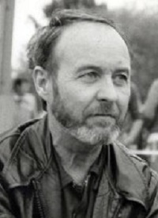

Rendező
| Gábor Pál |
Főszereplők
 |
||
| Pap Vera |
Szabó Éva |
Pásztor Erzsi |
| Dunai Tamás |
Horváth László |
Ráday Imre |
|  |
||
| Halász László |
Kádár Flóra |
Miről szól?
Angi Vera fiatal segédápolónő egy kórházban. Amikor felszólal az áldatlan körülmények ellen, leteremtik, de a kommunista párt a szárnyai alá veszi. Ideológiai továbbképzésre küldik, a szállásért és ellátásért cserébe agitátornak tanul. Közben beleszeret egyik tanárába, de a szigorú iskola falai között nem tudja megélni a szerelmet.
Mitől különleges?
Az Angi Vera nyomasztó szerelmes filmben mondja el, hogyan roncsolta az emberek személyiségét a kommunizmus. Kesernyés, melankolikusan szívszorító film. Az egyént átformáló, magához idomító rendszer tűéles kritikája. 1948-ban játszódik, amikor a második világháború utáni, demokratikus többpártrendszer átalakult kommunista diktatúrává. A pártiskola olyan, mint egy börtön: aki elszökik, azt katonák hurcolják vissza; táncolni, szórakozni itt csak parancsszóra lehet. Angi Vera a rideg, keményvonalas Traján Anna mellé kerül, akiből az illegalitásban töltött évek, a nyilasok előli menekülés kiölt minden emberséget. Kiképzése a spicliké:
megtanulja, hogyan kell feljelenti azokat, akiknek a véleménye eltér a pártétól, és azt is, hogy akár a szerelmet is feladja a párthűségért.
A fő cél az ideológiai átnevelés, a rászoktatás az ún. önkritikára. Lényege, hogy az ember elsajátítsa a kommunista ideológiát – és az alapján magát is elítélje. Így törik meg az embert, rendelik alá a pártnak a személyiségét, a vágyait, az akaratát. A diktatúra a film végére megmutatja igazi arcát, a cél érdekében még a saját híveit is feláldozza. Az őszinte, humanista baloldaliakat kiköpi a rendszer, a karrierlétrát csak azok mászhatják meg, akiknek könnyen hajlik a gerince.
Hogyan készült?
Az Angi Verát a sokszínű tehetség, a méltatlanul keveset emlegetett Gábor Pál rendezte Vészi Endre azonos című kisregényéből. Az Utazás Jakabbal mellett az Angi Vera a rendező csúcsműve. A siker nyomán következő filmje az író hasonló tematikájú Kettévált mennyezet című kisregényének adaptációja lesz. Pár évvel később pedig egy amerikai-magyar koprodukcióban a Hair főszereplőjével, John Savage-dzsel is forgatott, de a Hosszú vágta rossz fogadtatása derékba törte a pályáját. Az Angi Vera fontos film a címszerepet nagyszerűen alakító Pap Veronika és az operatőr Koltai Lajos pályáján is: az ő szomorkásan fojtogató, vörösesbarna őszi képei igazán emlékezetessé varázsolják a filmet.
Hol a helye a (magyar) filmtörténetben?
Az Angi Vera új fejezetet nyitott a magyar filmtörténetben. A rendezők 1978-tól kezdve nyíltan dolgozták fel az ötvenes évek kommunista diktatúráját – ezt a ciklust nevezik „ötvenes évek-filmeknek”. Az Angi Vera és Kovács András A ménesgazdá-ja mellett ide sorolható például Mészáros Márta Napló-trilógiája. Az Angi Vera itthon és külföldön is sikert sikerre halmozott: Cannes-ból a filmkritikusok díját, Chicagóból a nagydíjat, San Sebastianból az Ezüst Kagylót hozta el. 1979-ben Magyarország ezt a filmet nevezte az Oscarra, amely az előválogatóig eljutott, de végül nem kapott jelölést.
Egy emlékezetes jelenet
Angi Vera elkíséri Traján Annát egy párt- és elvtársukhoz. A szomszéd nyit ajtót, és beinvitálja magához a nőket, amíg az ismerősük hazaér. A jelenet tökéletesen illusztrálja, hogyan torzult kirekesztő, diktatórikus rezsimmé a munkások és a szegények helyzetének jobbítását megcélzó mozgalom. Ebben a világban már nem az számít, kinek van igaza, hanem hogy kinek van párttagsága. Csak az juthat előre, aki derék elvtárs. Aki kritikát fogalmaz meg, akármilyen jogosat, azt osztályellenségnek bélyegzik.
https://filmarchiv.hu/hu/alapfilmek/film/angi-vera